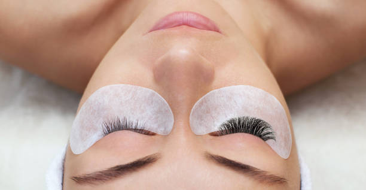

Getting ready in the morning has been revolutionized in the past few years with semi-permanent beauty treatments like eyelash extensions, eyebrow microblading and dip nail polish. Long gone are the days of swiping coat after coat of mascara for women indulging in these trends.  Semi-permanent makeup allows women to wake up glam and ready to go, and everyone else is here to bask in their ingenious investment.
Meg, a junior engineering student, has had eyelash extensions and tinted eyebrows on and off for four years. She started this love affair when she worked at a tanning salon that offered eyelash and eyebrow services. She was able to encourage customers to get eyelash extensions because she worked at the front desk and they were able to see the finished product on her. Meg has never looked back because her eyelash extensions make her 'feel like a 'bad bitch' and make getting ready so quick and easy'. Waking up with her eyelashes and eyebrows done her makeup routine has become minimal, therefore saving her time. Meg does not get her eyelashes and eyebrows done to look natural, it is actually her goal to look as glam as possible. She gets a full set of the biggest lashes and the darkest tint she can get on her brows. 'I know some people don't like them, but I don't care what they think because I feel like my best self'. Meg likes the way the beauty industry is moving towards more semi-permanent treatments because of the 'minimal effort for maximum look'. She is willing to try other treatments like laser hair removal and frequently gets acrylic nails. Her take on microblading is 'if it's shit, it's shit' because it is a process that involves tattooing your eyebrows and she has only ever seen 'excellent or botched' microbladed brows.

Meg would recommend eyelash extensions and tinted eyebrows to anyone who is looking for a time saving investment to their beauty routine. As a front desk employee at the salon, she pitched these treatments to women all the time. She thinks everyone can benefit from waking up with a full set of lashes, but in particular women who are reaching middle age. She explains that a lot of middle aged women experience thinning of their eyelashes and eyebrows and may even start losing some of those hairs. No matter what age group, Meg thinks that semi-permanent beauty treatments are a great way to feel confident.
Kristen, the founder of The Lash Factory in Syracuse, NY, had a great insight into the world of this beauty treatment. She founded The Lash Factory in 2007 and the salon offers eyelash extensions, eyelash lifts, eyelash tints, eyebrow waxing and Henna eyebrow tints. She describes her main clientele as '25-40 year old full time professionals' along with the SU students during the school year. Sometimes her clients will be coming in before or after work as their 'me time'. Kristen resonates with these women who are taking that time out of their day to do something for themselves. She feels a deep connection with her clients and works to get the perfect lashes for them. The process of finding the right length, curl and thickness of the lashes is an extensive process that involves the length of the client's face, eyelid, eyebrow and natural lash. Not all of her clients want a full, dramatic lash. Many older women come in wanting a natural look that will make them appear 'awake and fresh'. Kristen recommends these treatments to anyone who wants to wake up and feel beautiful. She connects with her clients and knows that she is part of their self care routine and takes pride in that.